学习总是东拼西凑？Python空间转录组分析全程班了解一下
原文：https://mp.weixin.qq.com/s?__biz=MzAwMzIzOTk5OQ==&mid=2247531284&idx=1&sn=cc785f60e85a3caa8117792de60e1393&chksm=9b3c0244ac4b8b52bfd977a475b99ec4e1bd15a056079e67b1d81e183f9b07032b379a4abd2e#rd 合集：生信基地
写在前面

 你是否厌倦了东拼西凑的教程和零散的知识点？空间转录组学的技术门槛高，仅仅依靠网络上的零星资料，难以构建一个完整高效的知识体系。尤其是分析生态不成熟、不统一的空间转录组领域，更是如此，我们此次推出的空间转录组分析全程班将提供一个从理论到实操、从基础分析到文献复现的完整闭环学习路径。2025.10.20~12.12，为期两个月（线上/线下均可参与，错过直播也可以加入录播/答疑+循环开课）。生信基地希望能够做到“手把手”的带大家完成数据分析学习，当然，我们拒绝生信快餐，课后欢迎大家随时在群里对课程内容提问~。自学能力强的小伙伴也可以直接跟B站教程。参与此次课程你将获得：1、为期两个月空间转录组数据分析教学。2、加入全程班群聊，三年内当前课程指导、答疑、回放、直播复听，相信足够覆盖你的硕博生涯学习。2、开箱即用的空间转录组分析镜像，256GB内存、512GB硬盘、20线程服务器3个月使用权。4、课程对应分析手册、代码、测试文件。报名联系客服微信[Biomamba_zhushou]：
你是否厌倦了东拼西凑的教程和零散的知识点？空间转录组学的技术门槛高，仅仅依靠网络上的零星资料，难以构建一个完整高效的知识体系。尤其是分析生态不成熟、不统一的空间转录组领域，更是如此，我们此次推出的空间转录组分析全程班将提供一个从理论到实操、从基础分析到文献复现的完整闭环学习路径。2025.10.20~12.12，为期两个月（线上/线下均可参与，错过直播也可以加入录播/答疑+循环开课）。生信基地希望能够做到“手把手”的带大家完成数据分析学习，当然，我们拒绝生信快餐，课后欢迎大家随时在群里对课程内容提问~。自学能力强的小伙伴也可以直接跟B站教程。参与此次课程你将获得：1、为期两个月空间转录组数据分析教学。2、加入全程班群聊，三年内当前课程指导、答疑、回放、直播复听，相信足够覆盖你的硕博生涯学习。2、开箱即用的空间转录组分析镜像，256GB内存、512GB硬盘、20线程服务器3个月使用权。4、课程对应分析手册、代码、测试文件。报名联系客服微信[Biomamba_zhushou]： 通过两个月的学习，你能够绘制上百种空间转录组图表，以下为部分图片集锦：
通过两个月的学习，你能够绘制上百种空间转录组图表，以下为部分图片集锦：
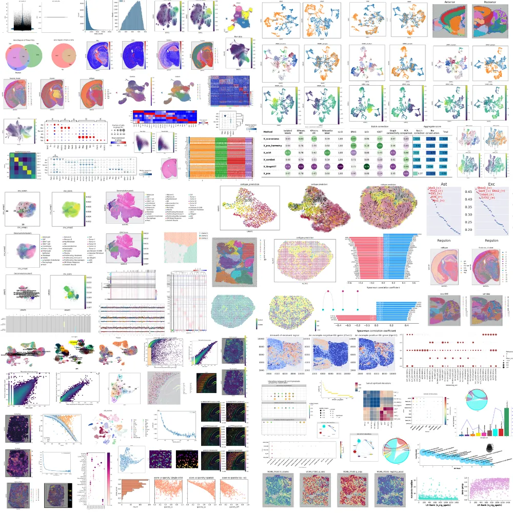
更多课程可见：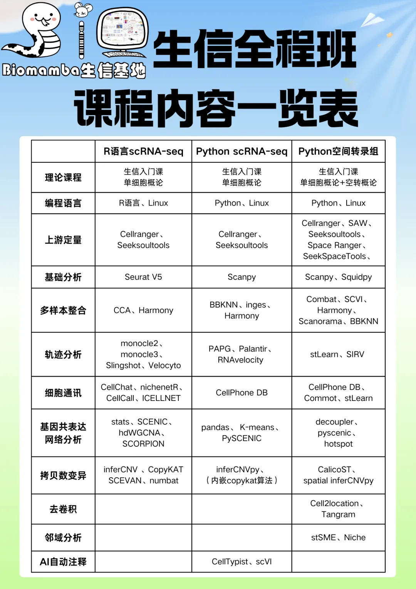

内容计划&大纲
以下是我们此次课程的时间安排：
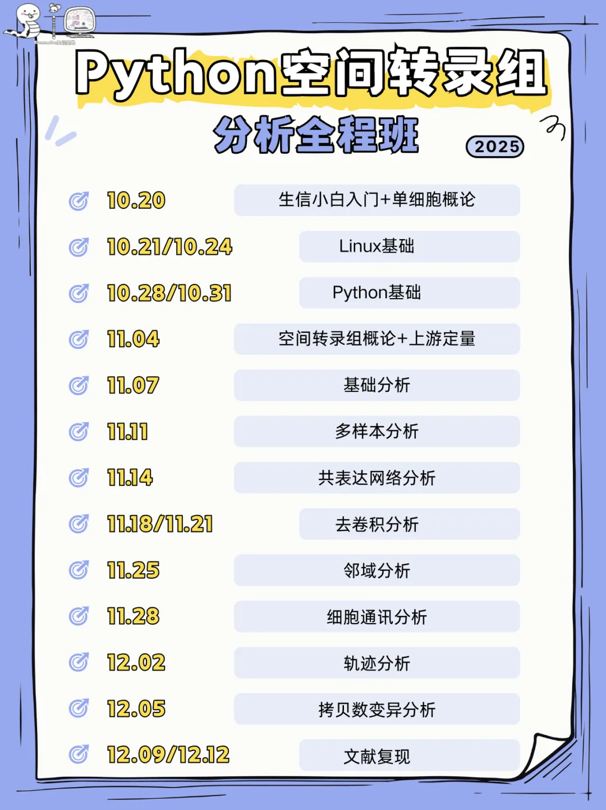
所见即所得
通过这次全程学习，你将获得并掌握以下学习手册与资料：
Linux基础课学习手册
同我们以前的课程一样，我们给大家准备了学习手册和学习资料，大家可联系客服微信[Biomamba_zhushou]领取：

Python基础课学习手册

 同我们以前的课程一样，我们给大家准备了学习手册和学习资料，大家可联系客服微信[Biomamba_zhushou]领取：
同我们以前的课程一样，我们给大家准备了学习手册和学习资料，大家可联系客服微信[Biomamba_zhushou]领取：


空间转录组-概论及上游定量学习资料
同我们以前的课程一样，我们给大家准备了学习手册和学习资料，大家可联系客服微信[Biomamba_zhushou]领取：

教程目录 ：
零、欢迎关注
一、空间转录组概论 &常见平台的上游定量
1.1 背景与发展历程
1.2 技术分类
1.3 实验流程
1.3.1 10x Visium
1.3.2 SeekSpace（高通量条码捕获+空间分辨率优化）
1.3.3 Stereo-seq
（1）Stereo-seq的DNA Nanoball（DNB）技术
1.4 空间转录组平台对比
二、上游测序数据定量
2.110x Visium平台****
2.1.1 软件安装
2.1.2 示例数据下载
2.1.3 参考基因组构建（适用于非模式动物）
2.1.4 定量
2.1.5 结果文件概况
2.1.6 Space Ranger Metrics说明
2.2SeekSpace平台****
2.2.1 软件安装 2.2.2 下载示例数据 2.2.3 参考基因组构建（兼容10X genomics格式） 2.2.4 定量 2.2.5 结果文件概况 2.2.6 读取为Anndata对象
2.3 Stereo-seq平台
2.3.1 软件安装与下载 2.3.2 构建参考基因组（非模式动物） 2.3.3 定量 （1）输入文件 （2）运行 2.3.4 结果文件概况 （1）不同大小Bin统计信息 （2）Cell Bin统计信息 2.3.5 读取为Anndata对象 三、软件版本**** 四、单细胞教程全收录五、欢迎致谢****
空间转录组-基础分析学习资料
同我们以前的课程一样，我们给大家准备了学习手册和学习资料，大家可联系客服微信[Biomamba_zhushou]领取：
教程图片集锦：
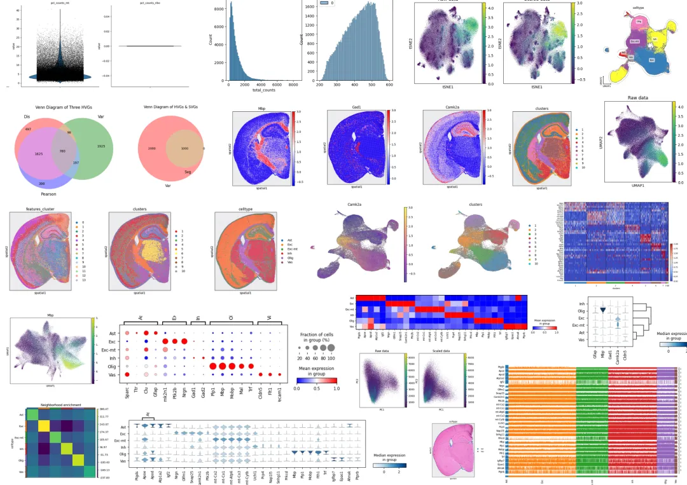
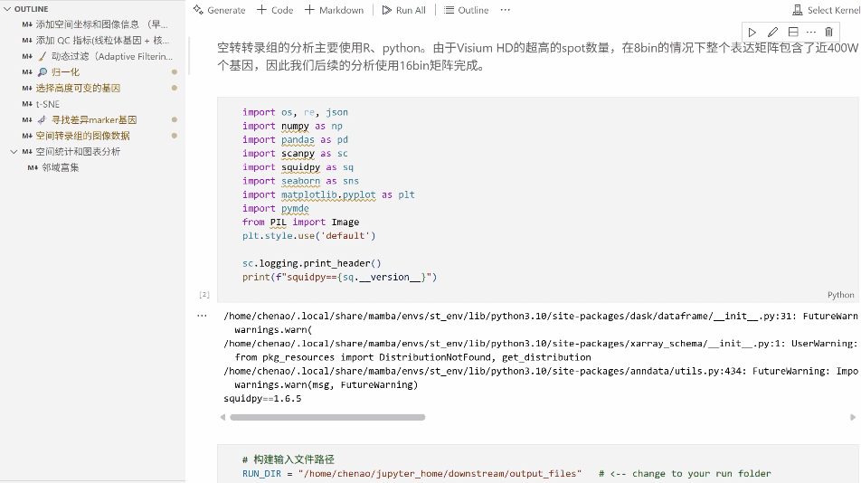
教程目录 ：
零、欢迎关注
一、添加空间坐标和图像信息（早期版本）
二、添加QC指标（线粒体基因+核糖体基因）
三、动态过滤（Adaptive Filtering）
四、归一化
五、选择高度可变的基因
六、t-SNE
七、寻找差异marker基因
八、空间转录组的图像数据
九、空间统计和图表统计
9.1 邻域富集十、软件版本****
十一、单细胞教程全收录十二、欢迎致谢****
空间转录组-进阶分析-多样本分析学习资料
同我们以前的课程一样，我们给大家准备了学习手册和学习资料，大家可联系客服微信[Biomamba_zhushou]领取：
教程图片集锦：

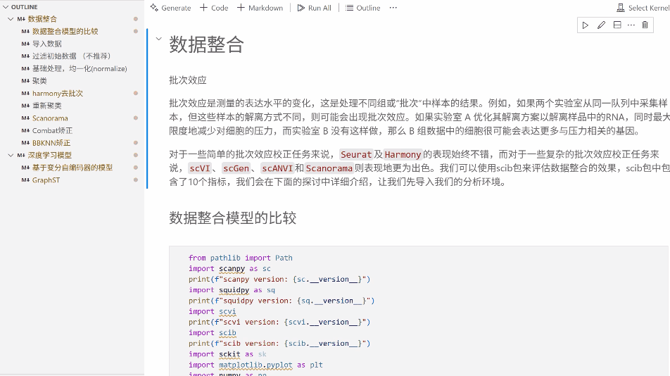
教程目录 ：
零、欢迎关注
一、数据整合
1.1 数据整合模型的比较
1.2 导入数据
1.3 过滤初始数据（不推荐）
1.4 基础处理，均一化（normalize）
1.5 聚类
1.6 harmony去批次
1.7 重新聚类
1.8 Scanorama
1.9 Combat矫正
1.10 BBKNN矫正
二、深度学习模型
2.1 基于变分自编码器的模型
2.2 GraphST
三、软件版本************四、单细胞教程全收录****五、欢迎致谢
空间转录组-进阶分析-共表达网络分析学习资料
同我们以前的课程一样，我们给大家准备了学习手册和学习资料，大家可联系客服微信[Biomamba_zhushou]领取：
教程图片集锦：

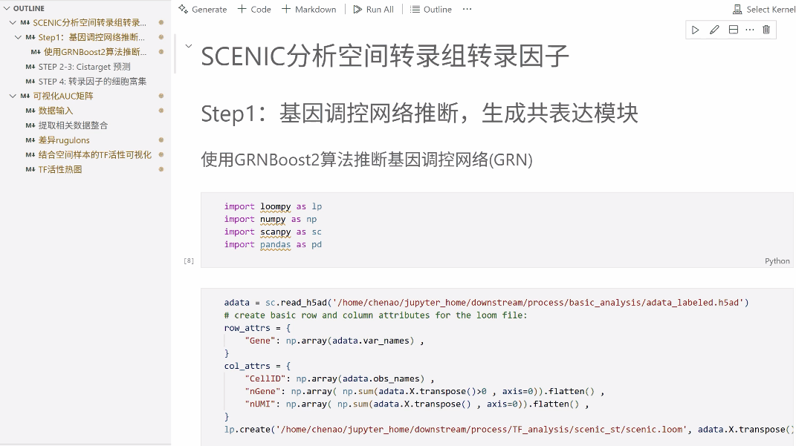
教程目录 ：
零、欢迎关注
一、SCENIC分析空间转录组转录因子
1.1 基因调控网络推断，生成共表达模块
1.1.1 使用GRNBoost2算法推断基因调控网络（GRN）
1.2 Cistarget预测
1.3 转录因子的细胞富集
二、可视化AUC矩阵
2.1 数据输入
2.2 提取相关数据整合
2.3 差异regulons
2.4 结合空间样本的TF活性可视化
2.5 TF活性热图
三、软件版本************四、单细胞教程全收录****五、欢迎致谢
空间转录组-进阶分析-去卷积分析学习资料
同我们以前的课程一样，我们给大家准备了学习手册和学习资料，大家可联系客服微信[Biomamba_zhushou]领取：
教程图片集锦：

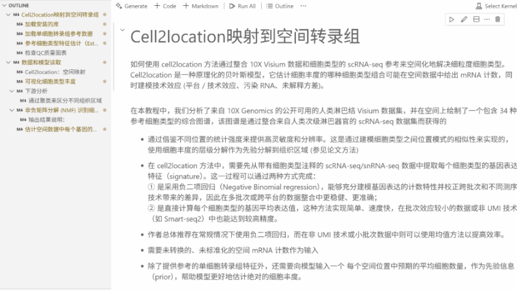
教程目录 ：
零、欢迎关注
一、Cell2location
1.1 Cell2location映射到空间转录组
1.1.1 加载安装的库
1.1.2 价值单细胞转录组参考数据
1.1.3 参考细胞类型特征估计（Estimation of reference cell type signatures）------NB回归）
1.1.4 检查QC质量图表
1.2 数据和模型读取
1.2.1Cell2location：空间映射****
1.2.2 可视化细胞类型丰度
1.2.3 下游分析
（1）通过聚类来区分不同组织区域
1.2.4 非负矩阵分解（NMF）识别细胞区室/组织区域
（1）输出结果说明
1.2.5 估计空间数据中每个基因的细胞类型特异性表达
二、Tangram
2.1 加载空间转录组和单细胞参考数据
2.2 预处理
2.3 数据对齐
2.4 细胞类型映射
2.5 通过对齐单细胞数据获得新的空间数据
2.6 通过比对单细胞数据进行反卷积
三、软件版本****
四、单细胞教程全收录五、欢迎致谢****
空间转录组-进阶分析-邻域分析学习资料
同我们以前的课程一样，我们给大家准备了学习手册和学习资料，大家可联系客服微信[Biomamba_zhushou]领取：
教程图片集锦：
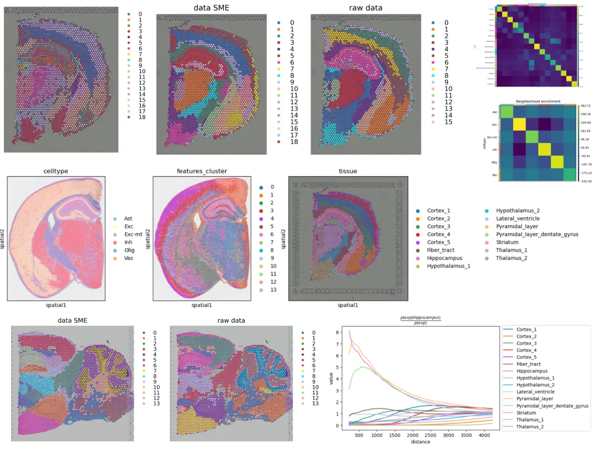
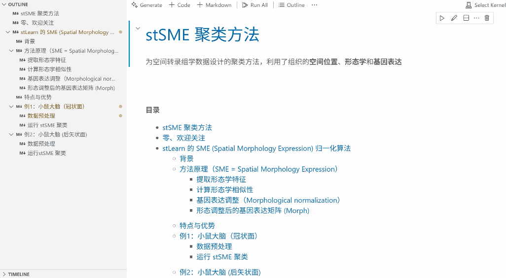
教程目录 ：
零、欢迎关注
一、stLearn的SME (Spatial Morphology Expression) 归一化算法
1.1 背景
1.2 方法原理（SME = Spatial Morphology Expression）
1.2.1 提取形态学特征
1.2.2 计算形态学特征
1.2.3 基因表达调整（Morphological normalization）
1.2.4 形态调整后的基因表达矩阵（Morph）
1.3 特点与优势
1.4 例1：小鼠大脑（冠状面）
1.4.1 数据预处理
1.4.2 运行stSME聚类
1.5 例2：小鼠大脑（后矢状面）
1.5.1 数据预处理 1.5.2 运行stSME聚类
二、 基于空间转录组的图像数据的邻域分析
2.1 加载所需库
2.2 读取数据
2.3 计算不同尺度的特征
2.4 数据聚合
2.5 数据基础分析
2.6 可视化聚类信息
2.7 空间统计和图表分析
2.7.1 邻域富集
2.8 配体-受体相互作用分析
三、软件版本****
四、单细胞教程全收录五、欢迎致谢****
空间转录组-进阶分析-细胞通讯分析学习资料
同我们以前的课程一样，我们给大家准备了学习手册和学习资料，大家可联系客服微信[Biomamba_zhushou]领取：
教程图片集锦：
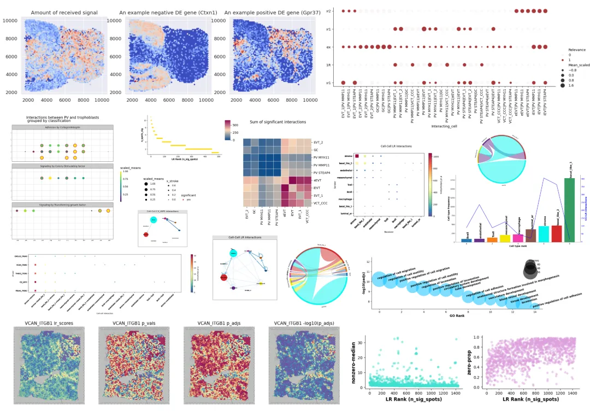
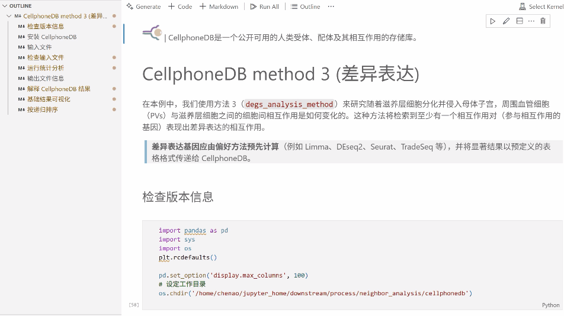
教程目录 ：
零、欢迎关注
一、CellphoneDB
1.1 检查版本信息
1.2 安装CellphoneDB
1.3 输入文件
1.4 检查输入文件
1.5 运行统计分析
1.6 输出文件信息
1.7 解释CellphoneDB结果
1.8 基础结果可视化
1.9 按递归排序
二、commot
2.1 安装
2.2 测试文件
2.2.1 导入所需库和包
2.2.2 预处理空间数据文件
2.2.3 空间通讯信号推断
三、stlearn
3.1 StLearn细胞间相互作用分析
3.1.1 环境配置
3.1.2 数据加载和预处理
3.1.3 运行受配体分析
3.1.4 P值矫正
3.1.5 按显著程度可视化LR的整体排名
3.1.6 判定绘图
3.1.7 下游可视化
（1）受配体对的统计可视化
（2）LR解释结果可视化
（3）预测重要的CCIs
（4）检查相互作用和细胞类型频率相关性
（5）CCI可视化
（6）空间细胞类型的相互作用
3.2 作者建议-可视化技巧
四、软件版本****
******五、单细胞教程全收录**六、欢迎致谢
空间转录组-进阶分析-轨迹分析学习资料
同我们以前的课程一样，我们给大家准备了学习手册和学习资料，大家可联系客服微信[Biomamba_zhushou]领取：
教程图片集锦：
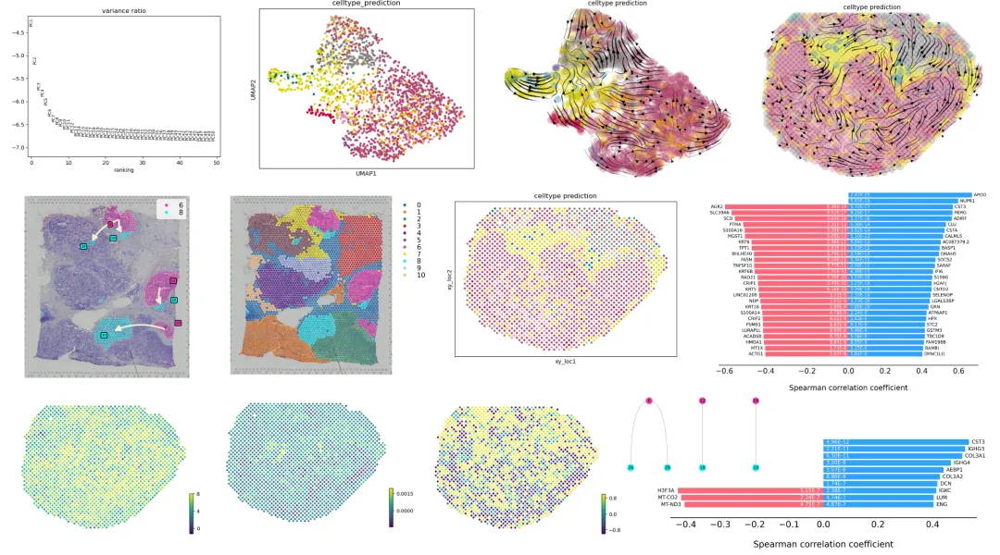
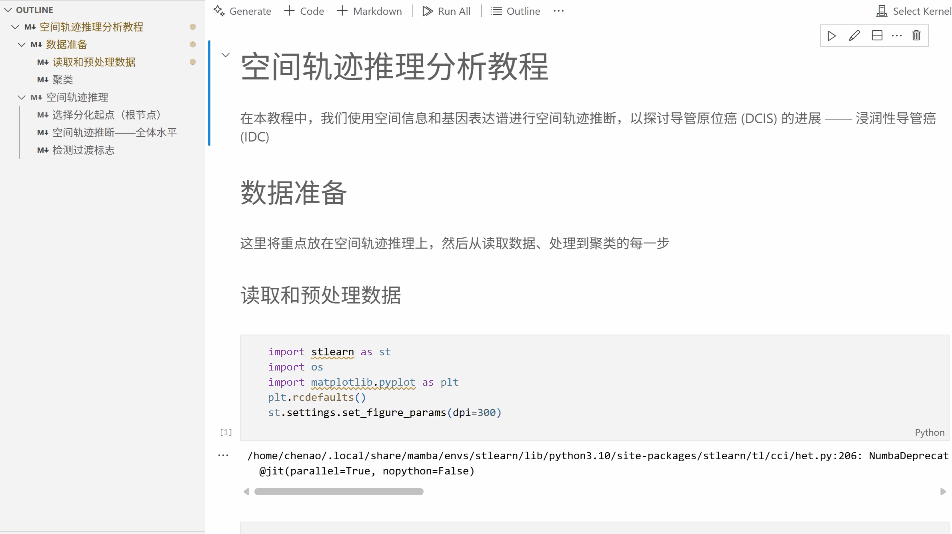
教程目录 ：
零、欢迎关注
一、stLearn_pse
1.1数据准备
1.1.1 读取和预处理数据
1.1.2 聚类
1.2 空间轨迹推理
1.2.1 选择分化起点（根节点）
1.2.2 空间轨迹推断--全体水平
1.2.3 检测过渡标志
二、SIRV
2.1 准备工作
2.2 SIRV实现流程
2.2.1 输入数据
2.2.2 域适配（Domain Adaptation / Alignment）
2.2.3 基于scRNA-seq训练模型 / 回归
2.2.4 将预测的velocity映射到空间
2.2.5 标签转移
2.3 运行示例
2.3.1 加载所需的库
2.3.2 读取示例数据
2.3.3 补全信息
2.3.4 常规降维
2.3.5 降维聚类
2.3.6 velocity推断流程
2.3.7 可视化流线图
2.3.8 局部流向箭头图
2.3.9 比较补全前后信息
2.3.10 评估velocity相似性
三、软件版本************四、单细胞教程全收录****五、欢迎致谢
空间转录组-进阶分析-拷贝数变异分析学习资料
同我们以前的课程一样，我们给大家准备了学习手册和学习资料，大家可联系客服微信[Biomamba_zhushou]领取：
教程图片集锦：

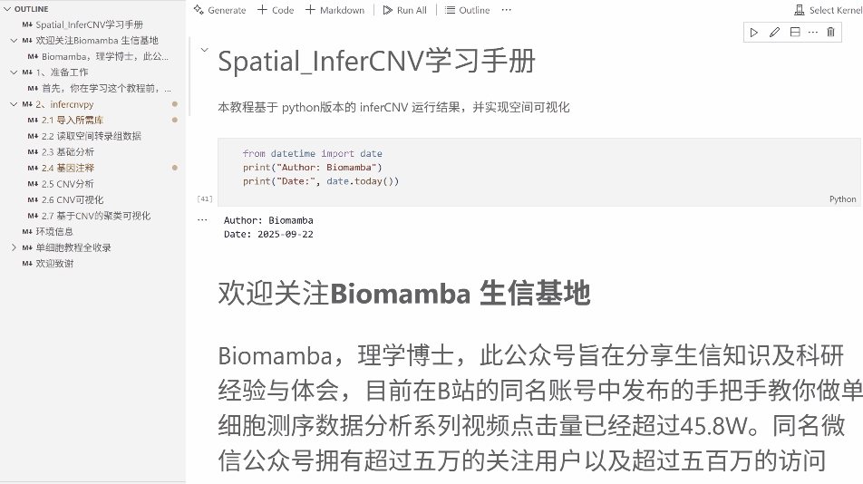
教程目录 ：
零、欢迎关注
一、使用模拟数据运行CalicoST
1.1 下载数据
1.2 运行CalicoST
二、复制configuration文件来用于推断CNA和癌症克隆
2.1 加载结果到python中进行可视化
三、软件版本************四、单细胞教程全收录****五、欢迎致谢
报名费用
两个月的课程，单个只要4999￥！详情咨询客服微信[Biomamba_zhushou]
有其它任何想法的同学也欢迎随时联系我们，更欢迎看看我们的价值观：想钱想疯了？
线下学习环境
地点 ：南京市江宁区，详细地址咨询客服微信[Biomamba_zhushou]**
往期活动现场：
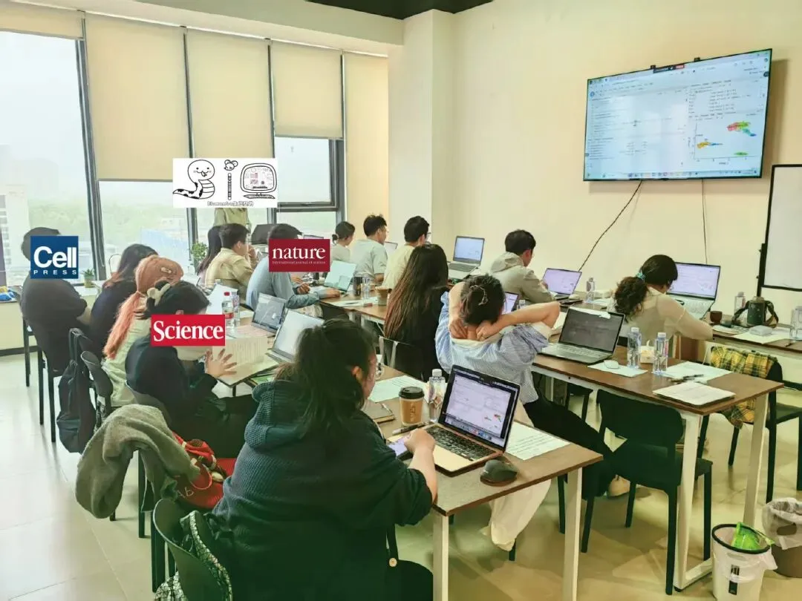
**
除了知识之外，现场还能够给大家提供：
茶水吧、咖啡机、零食柜
各类饮料、零食小吃


如何联系我们

 留一个领取资料、开箱即用的单细胞分析镜像的微信号[Biomamba_zhushou]，方便各位随时交流。同时我们也构建了交流群矩阵，欢迎大家入群讨论。
大家可以阅读完这几篇之后添加给生信入门初学者的小贴士
没有检索，就没有发言权
留一个领取资料、开箱即用的单细胞分析镜像的微信号[Biomamba_zhushou]，方便各位随时交流。同时我们也构建了交流群矩阵，欢迎大家入群讨论。
大家可以阅读完这几篇之后添加给生信入门初学者的小贴士
没有检索，就没有发言权
已有生信基地联系方式的同学无需重复添加
 您点的每个赞和在看，我都认真当成了喜欢
您点的每个赞和在看，我都认真当成了喜欢